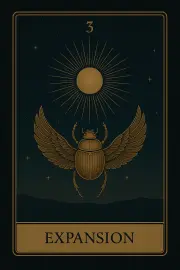
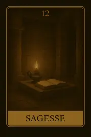
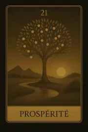
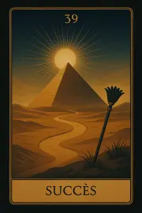
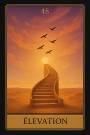
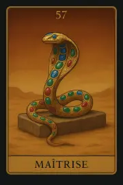
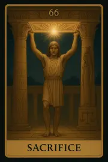
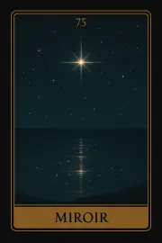

Famille 3 – Amon-Rê (Jupiter)
Cette famille explore l’ouverture à l’autre, la croissance mutuelle, les liens d’âme et les élans de cœur. Elle est liée à Jupiter et à Amon-Rê, divinité du rayonnement, de la générosité et de la force vitale partagée. Elle éclaire notre manière de nous relier au monde avec confiance, expansion et intégrité.
Carte 3 – Expansion
Mots-clés : Croissance, Ouverture, Abondance, Opportunité, Élargissement
Numérologie : : 3 – Création, Expression, Manifestation
Planète principale : Jupiter
Divinité principale : : Amon-Rê
Planète secondaire : Soleil
Divinité secondaire : Râ
Interprétation de la carte 3 : Expansion (droite)
1. Caractère de la personne
L’apparition de la carte Expansion symbolise une personne dynamique, pleine de potentiel et capable de réaliser une croissance personnelle importante. Sous l’influence de Jupiter et Amon-Rê, cette personne est dotée d’une vision expansive, de l’optimisme et de la confiance pour ouvrir des portes et se lancer dans de nouveaux projets. Elle a un esprit ouvert, en quête constante d’opportunités, et est prête à explorer de nouveaux horizons. Avec l’influence secondaire du Soleil et de Râ, cette personne dégage une énergie rayonnante, et son charisme naturel lui permet de grandir, de s’épanouir et d’attirer les opportunités.
2. Plan affectif
Dans le domaine affectif, Expansion représente une période de croissance dans une relation ou une ouverture à de nouvelles rencontres. Cette carte annonce des opportunités de renforcer les liens affectifs ou de créer une connexion plus profonde avec un partenaire. L’énergie Jupiterienne favorise l’optimisme et la générosité, tandis que l’influence du Soleil et de Râ apporte une lumière dans les relations, apportant épanouissement et nourrissant la confiance mutuelle. Cette carte indique aussi que les relations amoureuses peuvent évoluer vers quelque chose de plus vaste et profond.
3. Plan matériel
Sur le plan matériel, Expansion symbolise l’arrivée d’opportunités importantes dans la vie de la personne. Il peut s'agir de prosperité, d’abondance ou de réussites financières qui se manifestent. C’est le moment propice pour faire grandir un projet, démarrer une nouvelle entreprise ou évoluer dans sa carrière. L’influence de Jupiter apporte des expansions dans les ressources matérielles et l’influence du Soleil et de Râ la légitimité et l’illumination nécessaires pour agir avec confiance. C'est un bon moment pour prendre des décisions et laisser les opportunités se manifester.
4. Plan professionnel
Dans le domaine professionnel, Expansion symbolise des opportunités de croissance ou une expansion de carrière. Cela pourrait signifier la possibilité de se développer dans un domaine ou d’élargir ses horizons professionnels. Sous l’influence de Jupiter, cette carte suggère des opportunités qui permettent à la personne d’atteindre de nouveaux sommets. Avec l’énergie du Soleil, il y a un aspect de révélation dans ce parcours, permettant à cette personne de briller dans son travail, de manifester son potentiel et de saisir les occasions qui s’offrent à elle. Cela peut également indiquer des promotions ou des récompenses professionnelles.
5. Plan spirituel
Spirituellement, Expansion indique une évolution spirituelle, un élargissement de la conscience. La personne qui tire cette carte est dans une phase où elle peut accéder à des niveaux plus élevés de compréhension spirituelle, ou elle peut ressentir un appel à se connecter plus profondément à son essence divine. Sous l’influence de Amon-Rê et du Soleil, cette carte annonce un éveil spirituel où la personne se sent guidée par une lumière intérieure qui lui ouvre des horizons infinis. C’est un moment de réalisation spirituelle où des opportunités d'élévation se présentent.
Carte 3 : Expansion (inversée)
Lorsqu'elle est inversée, la carte Expansion indique que l’énergie d’ouverture et de croissance est bloquée ou ralentie. Cela peut signifier une période de doutes, de retards ou des obstacles qui empêchent la pleine réalisation des opportunités.
1. Caractère de la personne
En position inversée, cette carte peut signifier que la personne se sent limitée ou bloquée dans son évolution personnelle. Sous l’influence de Jupiter et Amon-Rê, il y a des obstacles externes ou des peurs internes qui freinent la capacité de cette personne à s’ouvrir et à évoluer. Il peut y avoir un manque de confiance ou une vision limitée, ce qui empêche de voir les opportunités qui se présentent. L’influence du Soleil et de Râ, normalement source de lumière, pourrait être obscurcie par des incertitudes ou des peurs qui maintiennent la personne dans un état de régression.
2. Plan affectif
Dans les relations affectives, l’inversion d’Expansion suggère des relations stagnantes ou inhibées, où la croissance mutuelle est limitée. Cela peut indiquer une impossibilité d’aller plus loin dans une relation, ou des problèmes d’engagement qui empêchent la relation de se développer. Il pourrait aussi y avoir un manque de confiance ou de communication claire, créant un sentiment de stagnation dans la relation.
3. Plan matériel
Sur le plan matériel, Expansion inversée symbolise des retards dans les projets ou des obstacles qui empêchent l’abondance ou la prospérité de se manifester. Cela pourrait signifier des difficultés à trouver des ressources, à concrétiser des idées ou à avancer dans des démarches matérielles. La personne pourrait également faire face à des difficultés financières ou des bloquages externes. L’influence du Soleil et de Râ peut indiquer qu’il faut faire preuve de patience et d’optimisme pour surmonter cette phase de stagnation.
4. Plan professionnel
Dans le domaine professionnel, Expansion inversée signale des freins à la carrière, un manque de progrès ou des opportunités manquées. La personne pourrait se sentir coincée dans sa position actuelle sans possibilité d’avancement, ou des projets importants pourraient être retardés ou annulés. L'influence du Soleil et de Râ demeure présente, mais la personne doit réévaluer sa stratégie et son approche professionnelle pour retrouver la lumière et les opportunités.
5. Plan spirituel
Spirituellement, l’inversion d’Expansion peut indiquer une évolution stagnante, où la personne se sent bloquée dans son parcours spirituel. Cela pourrait signifier un manque de réalisation spirituelle ou une obscurité intérieure qui empêche l’individu de voir le chemin clair devant lui. L'influence de Râ et du Soleil suggère qu'il est possible de retrouver la lumière, mais cela nécessite une réflexion et un réajustement spirituel pour aller de l’avant.
Résumé de la carte 3 : Expansion
La carte Expansion symbolise l'ouverture, la croissance et l'abondance. Elle annonce des opportunités de croissance intérieure et extérieure dans tous les aspects de la vie, avec des influences positives de Jupiter / Amon-Rê et du Soleil / Râ. Lorsqu'elle est inversée, la carte indique des freins temporaires dans ces processus d’évolution, mais les énergies positives restent présentes et peuvent être réactivées avec réflexion et persévérance.
Carte 12 – Sagesse
Mots-clés : : Connaissance, Réflexion, Compréhension profonde, Équilibre mental, Clarté intérieure
Numérologie : 12 – Perception, Apprentissage, Sagesse, Décisions
Planète principale : Jupiter
Divinité principale : Amon-Rê
Planète secondaire : Terre
Divinité secondaire : Geb
Interprétation de la carte 12 : Sagesse (droite)
1. Caractère de la personne
La carte Sagesse représente une personne dotée d'une grande capacité de réflexion et d'une compréhension profonde des situations. Elle est réfléchie, introspective, et accorde une grande importance à la connaissance et à la compréhension. Sous l'influence de Jupiter et de Amon-Rê, cette personne a une vision élargie des choses, cherchant toujours à voir les situations dans leur globalité et à apprendre de ses expériences. L'influence de Terre et de Geb ancre cette sagesse dans la réalité et dans des solutions pratiques, permettant à la personne de mettre en œuvre ce qu'elle a appris dans sa vie quotidienne, tout en maintenant un équilibre mental. Cette personne est un penseur profond, capable de prendre des décisions importantes basées sur la réflexion intérieure et la compréhension claire des enjeux.
2. Plan affectif
Dans le domaine affectif, Sagesse indique une relation mûre et équilibrée. Cela pourrait symboliser une personne capable de comprendre les besoins de son partenaire, de faire preuve de patience et de réflexion dans les moments de tension. Cette carte peut aussi représenter une relation où les deux partenaires ont trouvé un équilibre grâce à la compréhension mutuelle et la sagesse acquise avec le temps. L’influence de Jupiter et de Amon-Rê favorise la vision claire des choses, permettant aux deux partenaires de voir les situations sous un angle plus vaste, tandis que l'influence de Terre et de Geb assure une stabilité et une pragmatique application de cette sagesse dans les actions quotidiennes.
3. Plan matériel
Sur le plan matériel, Sagesse annonce un moment où la réflexion profonde mène à une compréhension claire des choix à faire. Cela peut signifier qu'une personne est en train de prendre une décision importante concernant sa situation financière ou professionnelle, après avoir bien réfléchi et analysé toutes les options. Cette carte suggère un moment de maturité, où la personne est capable de peser les avantages et les inconvénients avec sagesse avant de se lancer dans de nouvelles initiatives. L’influence de Jupiter et de Amon-Rê apporte une perspective élevée, tandis que Terre et Geb offrent une solide fondation pour agir de manière pratique et ancrée.
4. Plan professionnel
Dans le domaine professionnel, Sagesse indique une personne qui fait preuve de maturité et de compréhension dans sa carrière. Cela peut également symboliser un mentor ou un conseiller qui offre de la sagesse et des conseils éclairés. Cela pourrait aussi représenter une situation où une personne est en train de prendre des décisions professionnelles importantes, avec réflexion et prudence. L'influence de Jupiter et de Amon-Rê apporte une vision claire des objectifs professionnels à long terme, tandis que Terre et Geb permettent de mettre en pratique ces décisions de manière réaliste et stable.
5. Plan spirituel
Spirituellement, Sagesse symbolise un moment où la personne acquiert une compréhension profonde de sa voie spirituelle. Cela peut être un moment d'éveil spirituel, où l'individu prend du recul et commence à comprendre les mystères de la vie avec plus de clarté. Cette carte représente un moment où la réflexion mène à une compréhension spirituelle plus profonde, et où la personne est en quête de vérité et de sagesse intérieure. L’influence de Jupiter et de Amon-Rê apporte une dimension élevée, une vision plus large du chemin spirituel, tandis que Terre et Geb ancrent cette sagesse dans le monde physique, permettant à la personne de mettre en pratique ses acquis spirituels dans sa vie quotidienne.
Carte 12 : Sagesse (inversée)
Lorsqu’elle est inversée, la carte Sagesse symbolise un manque de clarté ou une difficulté à voir les choses clairement. Il peut y avoir un déséquilibre ou une confusion intérieure qui empêche la personne de prendre une décision éclairée ou de voir les choses sous un bon angle. Cela peut également signifier une perte de direction ou une incapacité à comprendre une situation importante, souvent en raison d’un excès de doutes ou d’un manque de réflexion profonde.
1. Caractère de la personne
En position inversée, Sagesse peut représenter une personne qui manque de réflexion ou qui agit sans discernement. Elle peut être confuse dans ses pensées ou difficilement en mesure de voir les choses avec clarté, ce qui peut mener à des décisions précipitées ou erronées. La personne pourrait se sentir désorientée ou incapable de trouver une direction claire.
2. Plan affectif
Sur le plan affectif, l’inversion de Sagesse indique une relation confuse ou déséquilibrée. Cela peut signifier que l’un des partenaires est dans le doute ou a perdu de vue ce qu’il cherche dans la relation. La carte peut aussi indiquer un manque de clarté émotionnelle, où les décisions affectives sont basées sur des illusions ou une méconnaissance des vrais besoins de chacun. Cela pourrait entraîner des difficultés à évoluer ou à prendre des décisions équilibrées dans la relation.
3. Plan matériel
Sur le plan matériel, Sagesse inversée peut symboliser une confusion dans les décisions financières ou professionnelles. La personne peut avoir du mal à voir les opportunités ou les obstacles, ou bien elle peut être indécise face à des choix importants. Cela pourrait également signifier un désalignement entre la réflexion intérieure et les actions concrètes dans le monde matériel, rendant difficile la progression dans les projets ou les finances.
4. Plan professionnel
Dans le domaine professionnel, l’inversion de Sagesse indique un manque de discernement ou de vision claire dans le travail ou les choix professionnels. Cela peut signifier qu'une personne manque de réflexion avant d'agir, ou qu’elle est dans une période de confusion professionnelle, ce qui pourrait ralentir sa progression. Cela pourrait également symboliser une absence de conseil éclairé, où la personne ne cherche pas à apprendre de ses erreurs ou à prendre des décisions basées sur des expériences passées.
5. Plan spirituel
Spirituellement, l’inversion de Sagesse montre un manque de direction spirituelle ou une désorientation spirituelle. La personne pourrait être dans un état de confusion spirituelle, où elle n'arrive pas à voir son chemin ou à se connecter à son essence spirituelle. Cela peut aussi indiquer qu’elle manque d'ouverture d'esprit ou qu'elle est bloquée par des croyances limitantes, l’empêchant de progresser spirituellement.
Résumé de la carte 12 : Sagesse
La carte Sagesse symbolise un moment de réflexion profonde, où une compréhension claire des choses se fait jour, permettant à la personne de faire des choix éclairés et équilibrés. En position inversée, elle indique une confusion intérieure, un manque de discernement ou une difficulté à voir les choses avec clarté, ce qui peut perturber la prise de décision ou la compréhension d’une situation importante.
Carte 21 – Prospérité
Mots-clés : : Réussite, Abondance matérielle, Réalisation de soi, Accomplissement, Satisfaction
Numérologie : 21 – Accomplissement, Réussite personnelle, Satisfaction dans les efforts,
Planète principale : Jupiter
Divinité principale : Amon-Rê
Planète secondaire : Jupiter
Divinité secondaire : Amon-Rê
Interprétation de la carte 21 : Prospérité (droite)
1. Caractère de la personne
La carte Prospérité symbolise une personne qui réussit dans ses entreprises grâce à son dévouement et à sa vision claire. Elle est déterminée, ambitieuse et capable de manifester ses rêves dans la réalité. Sous l’influence de Jupiter / Amon-Rê, cette personne est pleine de confiance, elle attire l’abondance et sait comment transformer ses idées en réalités tangibles. Elle est très positive et épanouie, car elle sait que ses efforts sont récompensés, et elle profite de la gratitude et de la satisfaction dans ses réussites. Jupiter / Amon-Rê lui donne également une vision élargie, lui permettant de s’ouvrir à de nouvelles opportunités, et de maintenir une perspective optimiste pour l’avenir.
2. Plan affectif
Dans le domaine affectif, Prospérité indique une relation où l'harmonie et l’accomplissement personnel sont présents. Cela peut signifier que la personne se trouve dans une relation où ses désirs émotionnels sont pleinement réalisés, et où il existe une satisfaction profonde dans l’amour. Cette carte parle de réussite émotionnelle et de complicité dans une relation, où chaque partenaire est capable d'exprimer ses besoins et d’y répondre mutuellement. L'influence de Jupiter / Amon-Rê invite à une croissance partagée et à un épanouissement dans la relation, permettant à chaque individu de se sentir complet et soutenu par l’autre.
3. Plan matériel
Sur le plan matériel, Prospérité symbolise une réalisation dans le domaine financier ou des biens matériels. Cela peut signifier la réussite dans des projets personnels, professionnels ou financiers où les efforts sont récompensés. Cette carte annonce la stabilité financière et l’abondance matérielle, ainsi qu’un moment où la personne récolte les fruits de ses investissements et de son travail acharné. Jupiter / Amon-Rê stimule la croissance dans des domaines qui nécessitent vision, ambition et expansion, permettant à la personne d’attirer à elle l'abondance matérielle et les réalisations concrètes.
4. Plan professionnel
Dans le domaine professionnel, Prospérité est la carte de la réussite et de l’accomplissement dans la carrière. Cela peut signifier l’aboutissement d’un projet majeur, une promotion, ou une récompense pour les efforts fournis. C’est le moment où les objectifs professionnels sont atteints, et où la personne bénéficie des résultats tangibles de son travail. L'influence de Jupiter / Amon-Rê donne une perspective longue portée, permettant à cette personne de voir au-delà des obstacles et de transformer des problèmes complexes en opportunités de croissance.
5. Plan spirituel
Spirituellement, Prospérité représente la réalisation de soi et l’abondance spirituelle. Cela peut signifier que la personne se trouve dans un état d’épanouissement intérieur, où ses croyances et sa pratique spirituelle lui apportent satisfaction et connexion profonde avec l’univers. Cette carte indique que la réalisation spirituelle est à portée de main, et que l’individu est aligné avec son but supérieur, atteignant une harmonie spirituelle. Jupiter / Amon-Rê renforce cette quête spirituelle, apportant abondance intérieure et une vision éclairée du chemin à suivre.
Carte 21 : Prospérité (inversée)
Lorsqu'elle est inversée, Prospérité symbolise une stagnation ou une période de blocage dans le domaine de l’abondance. Cela peut signifier une difficulté à manifester des résultats tangibles, une perception de manque ou de frustration malgré les efforts fournis. L’inversion de cette carte peut également indiquer une période d’insatisfaction ou une difficulté à réaliser ses objectifs matériels ou émotionnels, malgré de bons efforts. Il est possible que la personne se sente bloquée ou que des obstacles externes empêchent l’atteinte de ses objectifs. L'inversion de cette carte appelle à réévaluer les stratégies utilisées et à revoir les priorités pour débloquer la situation.
1. Caractère de la personne
En position inversée, Prospérité représente une personne qui se sent insatisfaite ou bloquée dans ses efforts. Elle peut avoir l’impression que ses projets stagnent ou que ses efforts ne sont pas récompensés comme ils devraient l’être. Cela peut aussi indiquer un manque de confiance en soi ou une perception négative de la situation, rendant la personne plus susceptible aux échecs ou aux difficultés. La carte inversée suggère un besoin de repenser sa stratégie et de changer son approche pour dépasser les blocages internes ou externes.
2. Plan affectif
Sur le plan affectif, Prospérité inversée symbolise une relation où il y a insatisfaction émotionnelle ou manque de progression. Cela peut signifier que la relation ne progresse pas comme prévu, ou qu’une insatisfaction s’installe dans le couple. L’inversion de cette carte indique également des obstacles émotionnels à la réalisation des besoins affectifs ou des conflits sous-jacents qui empêchent l’épanouissement mutuel. Il est nécessaire de clarifier les attentes et de travailler sur la réconciliation des besoins émotionnels pour restaurer l’harmonie.
3. Plan matériel
Dans le domaine matériel, Prospérité inversée indique des difficultés financières, un manque d'abondance ou une stagnation matérielle. Cela peut être le signe que la personne ne parvient pas à atteindre ses objectifs financiers malgré ses efforts, ou qu’elle fait face à des blocages matériels. Il est nécessaire de réévaluer les plans financiers, de se recentrer sur les priorités, et d'ajuster les actions pour surmonter cette période de stagnation. La carte inversée suggère également un besoin de rééquilibrer les attentes vis-à-vis de la réussite matérielle.
4. Plan professionnel
Professionnellement, l'inversion de Prospérité peut signifier un échec partiel ou une difficulté à atteindre ses objectifs professionnels. Les efforts ne semblent pas être récompensés, et la personne peut avoir du mal à obtenir les résultats qu'elle attend. Il peut aussi y avoir un manque de reconnaissance professionnelle ou des obstacles externes qui empêchent de réaliser pleinement ses ambitions. La carte inversée indique qu’il est temps de réévaluer les stratégies professionnelles et d’apporter des changements pour surmonter cette période difficile.
5. Plan spirituel
Spirituellement, Prospérité inversée peut symboliser une désillusion spirituelle ou un sentiment de vide intérieur. La personne peut éprouver une difficulté à manifester ses désirs spirituels ou à trouver un sentiment d’abondance intérieure. Il se peut qu'elle se sente bloquée dans sa progression spirituelle, ou qu’elle traverse une période de doute concernant ses croyances. Cette carte inversée indique un besoin de recentrage spirituel et de réévaluation des pratiques spirituelles pour retrouver un sentiment d'accomplissement et de connexion spirituelle.
Résumé de la carte 21 : Prospérité
La carte Prospérité symbolise la réussite et l'abondance dans la vie de la personne, que ce soit sur le plan matériel, affectif ou spirituel. En position inversée, elle représente une période de blocage ou de difficultés dans l’atteinte de ces objectifs. Il est nécessaire de réévaluer les stratégies et de surmonter les obstacles internes ou externes pour retrouver l’abondance et la satisfaction.
Carte 30 – Joie
Mots-clés : : Bonheur, Sérénité, Paix intérieure, Équilibre émotionnel, Satisfaction
Numérologie : 30 – Harmonie, Sérénité intérieure, Bonheur profond, Équilibre émotionnel
Planète principale : Jupiter
Divinité principale : Amon-Rê
Planète secondaire : Mars
Divinité secondaire : Sekhmet
Interprétation de la carte 30 : Joie (droite)
1. Caractère de la personne
La carte Joie symbolise une personne qui exprime un bonheur authentique et une sérénité intérieure. Elle est en paix avec elle-même et est capable de trouver du bonheur dans les petites choses de la vie. Cette personne est optimiste et sait comment équilibrer ses émotions, même dans les moments difficiles. Sous l'influence de Jupiter / Amon-Rê, elle est ouverte aux plaisirs de la vie et sait qu’une attitude positive est une clé importante pour manifester l’abondance dans tous les domaines de sa vie. L’influence de Mars / Sekhmet ajoute une énergie dynamique et une force intérieure qui permet à cette personne de maintenir son équilibre émotionnel même face aux défis.
2. Plan affectif
Sur le plan affectif, Joie symbolise une période de plénitude émotionnelle dans une relation. Cela peut signifier que la personne vit une relation épanouissante, où la satisfaction émotionnelle est forte et les énergies sont équilibrées. Cette carte invite à profiter des moments de bonheur partagé et à célébrer les liens affectifs profonds qui apportent la paix intérieure. Jupiter / Amon-Rê favorise une relation expansive et pleine d’abondance affective, tandis que Mars / Sekhmet encourage à apporter de l’énergie active et de la force dans la relation, permettant à celle-ci de grandir dans un équilibre harmonieux.
3. Plan matériel
Dans le domaine matériel, Joie annonce une période où la personne savourera ses réussites et les récompenses de ses efforts. Cela peut symboliser une réalisation financière ou une récompense matérielle issue du travail ou des projets personnels. Cette carte incite à apprécier les fruits du travail, à ressentir la satisfaction d’avoir atteint un objectif ou une étape importante. Sous l’influence de Jupiter / Amon-Rê, la personne peut être amenée à bénéficier d’une abondance dans le domaine matériel, et Mars / Sekhmet lui donne l’énergie et la détermination pour continuer à avancer dans cette direction.
4. Plan professionnel
Professionnellement, Joie représente une phase où le travail et les efforts sont récompensés. Cela peut signifier une promotion, la réalisation d'un projet important ou un progrès significatif dans la carrière. La carte suggère que la personne est dans un moment propice pour savourer les réalisations professionnelles et se réjouir des successes obtenus. L’influence de Jupiter / Amon-Rê ajoute un soutien positif dans les affaires et projets professionnels, tandis que Mars / Sekhmet renforce la dynamique de succès et donne à la personne la force de poursuivre ses objectifs avec énergie et conviction.
5. Plan spirituel
Spirituellement, Joie symbolise un état de paix intérieure et de légèreté spirituelle. Cela représente un alignement entre le corps, l’âme et l’esprit, où la personne se sent en harmonie avec son parcours spirituel. Cette carte évoque un moment de satisfaction spirituelle, où la personne ressent une connexion profonde avec l’univers, sans tensions ni obstacles internes. L'influence de Jupiter / Amon-Rê élargit cette sérénité et cette connexion spirituelle, permettant à la personne de se sentir épanouie dans sa quête intérieure, tandis que Mars / Sekhmet lui donne la force intérieure et l’audace de poursuivre cette voie spirituelle avec conviction et énergie.
Carte 30 : Joie (inversée)
Lorsqu'elle est inversée, Joie peut symboliser une perte de sérénité ou un manque de satisfaction intérieure. Cela peut signifier que la personne traverse une période de frustration émotionnelle ou un sentiment de vide intérieur, où les plaisirs de la vie ne semblent plus aussi accessibles. L’inversion de cette carte peut indiquer qu’il est nécessaire de retrouver l’équilibre émotionnel et de se connecter à la gratitude pour apporter à nouveau de la joie dans sa vie.
1. Caractère de la personne
En position inversée, Joie peut symboliser une personne qui traverse une période de frustration intérieure ou qui se sent déconnectée de son bonheur personnel. Elle pourrait être ébranlée par des épreuves ou se retrouver bloquée dans une dynamique négative, où les plaisirs et les réalisations semblent hors de portée. L’inversion suggère qu’il est temps de retrouver la clarté intérieure et de réévaluer ce qui est nécessaire pour ramener l’énergie positive et la satisfaction personnelle.
2. Plan affectif
Sur le plan affectif, Joie inversée peut symboliser une relation où les tensions ont pris le dessus ou où la personne ressent un manque de satisfaction ou de plénitude dans sa vie amoureuse. Cela peut signifier qu’il existe des blocages émotionnels qui empêchent l’ouverture et l’harmonie dans les relations. L’inversion de cette carte incite à travailler sur l’équilibre émotionnel et à chercher à rétablir la paix dans la relation, que ce soit par un dialogue ouvert ou un recentrage personnel.
3. Plan matériel
Dans le domaine matériel, Joie inversée peut signifier que la personne est dans une période d’insatisfaction financière ou matérielle. Cela peut être le résultat de problèmes financiers, de manque de succès ou de sentiment de frustration face à des objectifs non atteints. Cette carte incite à réévaluer les attentes matérielles et à travailler sur la gratitude pour ce que l’on a, afin de dissiper les frustrations et rétablir un équilibre dans les domaines matériels.
4. Plan professionnel
Professionnellement, Joie inversée peut signaler un manque de satisfaction dans le travail, des insatisfactions professionnelles ou une perception négative de la carrière. Cela peut aussi indiquer un sentiment de déséquilibre ou de frustration au travail, où les récompenses ne correspondent pas aux efforts fournis. Il est important ici de réévaluer ses objectifs professionnels et de trouver des moyens de rétablir un sentiment d’accomplissement et de réalisation professionnelle
5. Plan spirituel
Spirituellement, Joie inversée représente un déséquilibre intérieur ou une perte de connexion spirituelle. La personne pourrait se sentir bloquée dans sa quête spirituelle ou détachée de sa source de bonheur intérieur. Cela peut également symboliser un manque de gratitude spirituelle ou un vide spirituel qui empêche la personne de ressentir la paix intérieure. L'inversion de cette carte indique qu'il est important de se reconnecter à sa source de lumière intérieure et de retrouver le chemin du bonheur spirituel.
Résumé de la carte 30 : Joie
La carte Joie symbolise un état de bonheur authentique, de sérénité et d’équilibre émotionnel. En position inversée, elle représente une perte de satisfaction intérieure, un déséquilibre émotionnel ou une insatisfaction face aux résultats obtenus. Cette carte incite à retrouver l’équilibre et la gratitude dans la vie, pour ramener la joie et la satisfaction à nouveau.
Carte 39 – Succès
Mots-clés : : Victoire, Réussite, Atteinte des objectifs, Confiance en soi, Accomplissement personnel
Numérologie : 39 – Réussite personnelle, Accomplissement des désirs, Confiance et affirmation de soi, Triomphe sur les défis
Planète principale : Jupiter
Divinité principale : Amon-Rê
Planète secondaire : Mercure
Divinité secondaire : Thot
Interprétation de la carte 39 : Succès (droite)
1. Caractère de la personne
La carte Succès représente une personne qui a surmonté les défis et qui a atteint un niveau d'accomplissement personnel significatif. Cette carte indique que la personne a fait preuve de persévérance et de confiance en soi pour atteindre ses objectifs. L'influence de Terre / Geb montre une réussite tangible et ancrée, solide dans la réalité matérielle. Mercure / Thot apporte une clairvoyance mentale et une compréhension stratégique, permettant à la personne de bien planifier et d'exécuter ses actions de manière efficace. Cette personne se sent satisfaite de son parcours et des efforts qu’elle a fournis.
2. Plan affectif
Sur le plan affectif, Succès symbolise une relation où les objectifs communs sont atteints et où il y a un sentiment d’accomplissement partagé. Cela peut aussi signifier qu'une relation s'est solidement établie ou qu’une phase difficile a été surmontée, permettant à la personne de ressentir une confiance retrouvée dans sa vie amoureuse. Cette carte peut aussi indiquer une satisfaction dans les interactions affectives, où les attentes ont été réalisées et où la stabilité émotionnelle est atteinte. L’influence de Mercure / Thot indique une communication fluide et des échanges intelligents qui favorisent l’harmonie dans les relations.
3. Plan matériel
Dans le domaine matériel, Succès représente une réussite concrète sur le plan financier ou professionnel. Cela peut symboliser la réalisation d’un projet, la récompense d’efforts passés, ou la consolidation des acquis matériels. Cette carte symbolise le fait que les objectifs fixés ont été atteints, que ce soit par une croissance professionnelle, une promotion, ou la réalisation d'un rêve matériel. L'influence de Mercure / Thot favorise une gestion claire et une prise de décisions astucieuses, et cela indique que la personne sait comment optimiser ses ressources pour maintenir sa position de succès.
4. Plan professionnel
Professionnellement, Succès symbolise la réalisation des objectifs de carrière. Cela peut indiquer un avancement dans la carrière, la réussite d’un projet important ou la reconnaissance de ses efforts dans le domaine professionnel. Cette carte évoque aussi la confiance en soi retrouvée après des épreuves professionnelles. Elle confirme que la personne est sur la bonne voie et qu’elle va atteindre ses objectifs professionnels. L'influence de Mercure / Thot indique que la communication efficace et la stratégie intellectuelle ont joué un rôle crucial dans cette réussite.
5. Plan spirituel
Spirituellement, Succès représente l’atteinte d’un objectif spirituel ou la réalisation d’une quête intérieure. Cela peut symboliser une période où la personne atteint une compréhension profonde de son propre chemin spirituel ou ressent un sentiment de paix intérieure lié à son évolution. Cette carte symbolise également une récompense spirituelle pour les efforts fournis dans le domaine spirituel, que ce soit à travers la méditation, la prière, ou l'engagement dans des pratiques spirituelles. Mercure / Thot soutient cette progression spirituelle en offrant des enseignements clairs et une compréhension profonde des lois spirituelles.
Carte 39 : Succès (inversée)
Lorsqu'elle est inversée, Succès peut symboliser une victoire retardée ou un échec apparent, où la personne se sent bloquée dans ses efforts pour atteindre ses objectifs. Cela peut indiquer un sentiment de perte de contrôle, ou que les choses ne se déroulent pas comme prévu, malgré les efforts. L’inversion de cette carte incite à réévaluer les priorités, à chercher des solutions alternatives et à réajuster les stratégies afin de tourner cette situation en victoire. Parfois, cela peut aussi être le signe que la personne doit se détacher de certains objectifs ou accepter qu’une victoire ne soit pas aussi directe ou rapide que prévu.
1. Caractère de la personne
En position inversée, Succès représente une personne qui est confrontée à des difficultés à atteindre ses objectifs. Elle peut se sentir bloquée ou désorientée, comme si ses efforts ne portaient pas leurs fruits. Cette carte suggère que la personne doit réévaluer son approche, clarifier ses intentions et peut-être ajuster sa stratégie pour sortir de la stagnation.
2. Plan affectif
Sur le plan affectif, Succès inversée symbolise une relation marquée par un sentiment d’échec ou de frustration. Il peut s’agir d’une relation où les objectifs affectifs ne sont pas atteints ou où les attentes ne sont pas remplies, créant un sentiment de déception. Cette carte inversée appelle à revoir les attentes émotionnelles, à clarifier les besoins dans la relation, et à réévaluer les dynamiques affectives pour avancer de manière plus positive.
3. Plan matériel
Dans le domaine matériel, Succès inversée peut symboliser une période de stagnation ou d’échec matériel, où les efforts sont contrariés par des obstacles imprévus ou des retards financiers. Il peut s'agir d’un moment où les progrès sont difficiles à obtenir, et où la personne peut se sentir comme si ses efforts étaient vains. L’inversion de cette carte incite à réévaluer la stratégie financière ou professionnelle et à trouver de nouvelles solutions pour surmonter les blocages matériels.
4. Plan professionnel
Professionnellement, Succès inversée indique une difficulté à atteindre des objectifs professionnels. Cela peut signifier une perte de direction, une procrastination professionnelle ou des projets qui ne se réalisent pas comme prévu. L’inversion suggère qu’il est nécessaire de réajuster les attentes professionnelles et de trouver des solutions nouvelles pour surmonter cette phase d’échec apparent.
5. Plan spirituel
Spirituellement, Succès inversée indique une perte de connexion spirituelle ou une déconnexion du chemin spirituel. Cela peut symboliser des obstacles intérieurs ou des doutes spirituels qui empêchent la personne de progresser sur sa voie spirituelle. L'inversion de cette carte incite à renouer avec sa pratique spirituelle, à clarifier les objectifs spirituels et à chercher du soutien extérieur pour retrouver un chemin d’accomplissement spirituel.
Résumé de la carte 39 : Succès
La carte Succès symbolise la réussite, l’accomplissement des objectifs et la confiance en soi retrouvée. En position inversée, elle indique un échec apparent ou un ralentissement dans l’atteinte des objectifs, incitant à réévaluer la situation et à ajuster les stratégies pour trouver la voie vers la réussite.
Carte 48 – Elévation
Mots-clés : : Ascension, Élévation spirituelle, Croissance intérieure, Expansion de la conscience, Libération
Numérologie : 48 – Croissance spirituelle, Libération des contraintes, Expansion intérieure, Accès à un nouveau niveau de conscience
Planète principale : Jupiter
Divinité principale : Amon-Rê
Planète secondaire : Vénus
Divinité secondaire : Hathor
Interprétation de la carte 48 : Elévation (droite)
1. Caractère de la personne
La carte Élévation symbolise une personne qui est en pleine croissance intérieure. Elle se trouve à un moment où elle évolue spirituellement et où elle fait l’expérience d’un réveil intérieur profond. L’influence de Jupiter / Amon-Rê favorise une expansion de la conscience, une ouverture vers de nouvelles perspectives spirituelles et philosophiques. Cela peut se traduire par un désir intense d’évoluer, de se libérer des anciens schémas et d’atteindre un nouveau sommet de compréhension spirituelle. L’énergie de Vénus / Hathor soutient ce processus en apportant une harmonie intérieure, un équilibre et une connexion plus profonde à l'amour spirituel.
2. Plan affectif
Sur le plan affectif, Élévation symbolise la capacité à s’élever au-dessus des conflits et des limitations dans une relation. Cela peut être le moment où l’on trouve une nouvelle perspective sur une relation ou une situation affective, permettant ainsi de s’en délivrer ou de s’en libérer. Cette carte évoque également une réconciliation intérieure, où la personne apprend à s’aimer profondément avant de pouvoir offrir cet amour aux autres. L’influence de Vénus / Hathor facilite cette libération émotionnelle et crée un espace où l’amour peut se manifester dans son expression la plus pure et équilibrée.
3. Plan matériel
Dans le domaine matériel, Élévation symbolise une ascension dans la manière dont on gère les aspects matériels de la vie. Cela peut signifier une amélioration de la situation financière, une réussite professionnelle ou une nouvelle approche des biens matériels. La personne peut avoir l’opportunité de se libérer de contraintes matérielles et de se diriger vers un niveau supérieur de prospérité et de confort. Cette carte encourage à embrasser les opportunités de croissance qui se présentent, à laisser derrière soi les limitations matérielles, et à se concentrer sur l’expansion.
4. Plan professionnel
Professionnellement, Élévation annonce des moments où la personne atteint de nouveaux niveaux de compétence ou d’accomplissement dans sa carrière. Cela peut signifier une promotion, une reconnaissance professionnelle ou un changement de direction vers une carrière plus épanouissante. L’influence de Jupiter / Amon-Rê soutient les expansions professionnelles, favorisant la libération de toutes les contraintes ou limitations antérieures. Vénus / Hathor assure que cette croissance professionnelle se fasse de manière harmonieuse, avec des relations de travail équilibrées et respectueuses.
5. Plan spirituel
Spirituellement, Élévation symbolise un réveil profond de la conscience, où la personne se libère des limites de son passé et s’élève vers une nouvelle compréhension spirituelle. Cette carte marque une expansion spirituelle, où l’individu découvre des aspects plus profonds de son être, plus proches de la vérité universelle. C’est un moment où l’on se connecte à une dimension plus élevée de l’existence, un nouveau sommet spirituel s’ouvrant devant soi. Vénus / Hathor adoucit cette expérience en apportant une dimension d’amour spirituel et de compassion, équilibrant ainsi la quête de vérité avec une harmonie intérieure.
Carte 48 : Elévation (inversée)
En position inversée, Élévation symbolise un blocage dans la progression spirituelle ou personnelle. La personne peut se sentir bloquée dans sa croissance intérieure, ou incapable de se libérer des limitations passées. Il peut aussi s'agir d'un moment où la personne reste attachée à des croyances ou à des schémas obsolètes, l’empêchant de s’élever à un niveau supérieur de conscience. Cette inversion suggère qu’il est nécessaire de rompre avec les anciennes chaînes, de laisser aller les limitations mentales et émotionnelles, et d’accepter le processus de transformation intérieure.
1. Caractère de la personne
En position inversée, Élévation représente une personne qui stagne spirituellement ou émotionnellement. Elle peut se sentir bloquée dans ses croyances ou dans sa vie personnelle, et avoir des difficultés à s’élever au-delà de ses limitations. Cette carte incite à laisser tomber les poids du passé et à chercher un moyen de briser les chaînes de la stagnation intérieure.
2. Plan affectif
Sur le plan affectif, Élévation inversée symbolise une relation dans laquelle la personne ne parvient pas à se libérer des anciennes blessures ou des attachements malsains. Il peut s’agir d’une relation stagnante, où il est difficile de progresser ou d’évoluer émotionnellement. L’inversion de cette carte incite à réévaluer la relation et à trouver la force de se libérer des dynamiques qui ne servent plus à la croissance personnelle ou affective.
3. Plan matériel
Dans le domaine matériel, Élévation inversée symbolise un blocage dans la carrière ou les finances, où la personne se sent incapable d’avancer ou de sortir d’une situation stagnante. Cela peut également signifier une difficulté à se libérer des contraintes matérielles ou à atteindre ses objectifs. L’inversion incite à réévaluer la situation, à laisser aller les anciennes croyances limitantes concernant l’argent ou le travail, et à chercher un moyen de progresser avec plus de clarté.
4. Plan professionnel
Professionnellement, Élévation inversée peut indiquer des blocages dans la carrière, où les progrès semblent ralentir ou où la personne ne parvient pas à atteindre ses objectifs professionnels. Cela peut aussi signifier que la personne reste prisonnière de schémas professionnels obsolètes. L’inversion de cette carte encourage à abandonner les anciennes pratiques professionnelles et à rechercher des solutions créatives pour ouvrir de nouvelles voies de progression.
5. Plan spirituel
Spirituellement, Élévation inversée symbolise un déséquilibre dans la quête spirituelle. La personne peut se sentir bloquée dans son évolution spirituelle ou incapable d’embrasser une nouvelle perspective. Il est important de laisser tomber les vieilles croyances limitantes et de s’ouvrir à de nouvelles dimensions spirituelles, tout en cherchant un moyen de trouver un renouvellement spirituel. L’inversion de cette carte appelle à une réflexion intérieure pour briser les chaînes de l'ignorance et avancer vers un éveil profond.
Résumé de la carte 48 : Elévation
La carte Élévation symbolise l'ascension spirituelle et la libération des limitations passées. Elle annonce un réveil intérieur profond et une croissance spirituelle vers un nouveau sommet. En position inversée, elle représente une période de stagnation spirituelle ou émotionnelle, où la personne est invitée à se libérer des anciennes chaînes et à chercher un moyen de se renouveler.
Carte 57 – Maitrise
Mots-clés : : Savoir intégrer, autorité intérieure, maturité d’être, guidance par l’exemple, équilibre du mouvement et du sens, rayonnement incarné
Numérologie : 57 - Expression créative, expansion maîtrisée, sagesse communicante
Planète principale : Jupiter
Divinité principale : Amon-Rê
Planète secondaire : Saturne
Divinité secondaire : Osiris
Interprétation de la carte 57 : Maitrise (droite)
1. Caractère de la personne
Cette personne a vécu, traversé, compris. Elle n’est pas dans la théorie, mais dans la parole alignée à l’expérience. Elle dégage une forme d’autorité naturelle, souvent silencieuse, parce qu’elle n’a rien à prouver. Jupiter lui donne la vision. Amon-Rê la force solaire intérieure. Saturne et Osiris veillent à ce qu’elle parle depuis l’ombre traversée, et non depuis l’ego.
2. Plan affectif
Dans les relations, cette carte montre une personne capable d’écouter avec profondeur, de répondre avec sagesse, et de ne pas se précipiter dans le jeu émotionnel. Elle peut aussi guider ou inspirer ceux qu’elle aime, non par domination, mais par stabilité. C’est une carte d’équilibre émotionnel, de présence mature.
3. Plan matériel
La Maîtrise ici est la gestion lucide des ressources, la mise en place d’une structure concrète après un parcours fait d’essais et d’erreurs. Ce n’est pas la richesse en soi, mais l’abondance canalisée, alignée à l’être. La personne n’est plus dans la dispersion : elle agit avec précision et ancrage.
4. Plan professionnel
La carte peut désigner un guide, un formateur, un artisan expérimenté, ou toute personne dont le métier devient prolongement de son être intérieur. C’est l’indice d’un alignement entre vocation, compétence et maturité. Elle peut aussi annoncer l’accès à une responsabilité supérieure, méritée.
5. Plan spirituel
Ici, la Maîtrise représente une intégration spirituelle profonde. La personne n’a plus besoin de chercher : elle est devenue. C’est un état d’incarnation vibratoire, une présence alignée entre ciel et terre. L’enseignement est devenu présence vivante, parole qui élève sans vouloir convaincre.
Carte 57 : Maitrise (inversée)
1. Caractère de la personne
La personne est dans une posture de fausse autorité. Elle peut parler sans avoir vécu, se croire arrivée alors qu’elle est encore en chemin. Cela génère un décalage entre le discours et l’être, un manque d’ancrage. Le chiffre 5 prend le dessus : trop de mouvement, trop vite, sans intégration.
2. Plan affectif
Dans les relations, cela peut indiquer un déséquilibre de pouvoir, une volonté de contrôler, ou au contraire une fuite de l’engagement réel. La personne peut prétendre à la maturité émotionnelle, sans l’avoir traversée. Cette carte invite à revenir à l’humilité du cœur.
3. Plan matériel
Mauvaise gestion, décisions précipitées, manque de structure. On veut tout trop vite, sans fondation. Cela peut aussi indiquer un projet mal aligné à sa vérité profonde, ou des actions basées sur l’image plutôt que sur l’essence.
4. Plan professionnel
Rôle non assumé ou fausse posture. La personne peut se donner une place qui n’est pas encore la sienne. Cela peut être un besoin de reconnaissance prématuré, ou une volonté de diriger sans avoir intégré la responsabilité réelle.
5. Plan spirituel
Spiritualité de surface, enseignement prématuré, ou ego spirituel non digéré. Cela peut aussi indiquer une crise de foi, où la personne croit avoir perdu son chemin parce qu’elle n’a pas accepté le retour à l’humilité initiatique. Saturne rappelle : toute vraie élévation commence dans la descente.
Résumé de la carte 57 : Maitrise
La carte Maîtrise est le signe d’un rayonnement intérieur mûri par l’expérience. Elle marque un moment où l’on peut transmettre ce que l’on est devenu, sans avoir besoin de le démontrer.
À l’endroit, elle indique une intégration réelle, une parole juste, une autorité naturelle fondée sur le vécu.
À l’envers, elle met en lumière les zones de précipitation, de posture, ou de fausse sagesse, et invite à ralentir, revenir à l’essentiel, réapprendre par l’épreuve.
Carte 66 – Sacrifice
Mots-clés : : Dévouement extrême, oubli de soi, service sacré, rôle tenu à bout de bras, abnégation, tension du devoir, autorité du cœur, amour qui pèse, responsabilité écrasante
Numérologie : 66 - Amour universel, équilibre sublimé, idéal porté au sommet, Risque d’excès, de don sans retour, d’oubli de soi, Expression, retour à la voix individuelle
Planète principale : Jupiter
Divinité principale : Amon-Rê
Planète secondaire : Uranus
Divinité secondaire : Maât
Interprétation de la carte 66 : Sacrifice (droite)
1. Caractère de la personne
La personne porte une charge invisible aux autres. Elle est perçue comme forte, rayonnante, inspirante, mais elle s’oublie en tenant son rôle. Elle donne, soutient, encadre… sans se plaindre. Mais au fond, elle s’efface, doucement, dans un sacrifice d’elle-même au nom de la paix. Jupiter lui donne la grandeur. Maât lui demande la vérité. Uranus pourrait bien tout faire exploser si elle ne revient pas à elle.
2. Plan affectif
La personne se dévoue au lien, quitte à nier ses propres besoins. Elle peut aimer sans retour, ou tenir la relation seule. La carte invite à reconnaître cette dynamique : l’amour n’est pas sacrifice. Le don vrai ne demande pas l’effacement.
3. Plan matériel
Responsabilités excessives, rôle mal réparti, charge mentale ou logistique élevée. On continue “parce qu’il le faut”, mais le corps et l’âme crient silence. Il est temps de renégocier le cadre, ou d’en sortir.
4. Plan professionnel
La personne tient tout à bout de bras. Elle est la référence, le pilier, mais on attend d’elle sans lui redonner. Ce n’est pas une reconnaissance, c’est une prise d’otage symbolique. La carte alerte : l’équilibre est brisé si le don devient oubli.
5. Plan spirituel
Chemin d’abnégation, de service, mais où l’âme s’épuise à force de se taire. On confond voie spirituelle et soumission, mission sacrée et effacement personnel. Uranus te dit : “Tu es aussi important que ceux que tu veux sauver.”
Carte 66 : Sacrifice (inversée)
1. Caractère de la personne
Refus de dire “non”. Hyper-responsabilité, rôle tenu par loyauté excessive. Risque d’effondrement si la vérité de l’être n’est pas entendue. Cette carte t’invite à poser ta limite avec douceur mais clarté.
2. Plan affectif
Relation déséquilibrée où l’un donne tout et l’autre prend. Tu n’as pas à te sacrifier pour qu’on t’aime. Tu peux aimer sans t’oublier. La carte inversée est une alarme émotionnelle.
3. Plan matériel
Charge matérielle ou familiale pesante. Tu fais tourner tout seul une structure entière. Mais à quel coût ? C’est le moment de partager, de déléguer, de respirer.
4. Plan professionnel
Tu es devenu le socle d’un système qui t’use. On t’honore en façade, mais on attend de toi des miracles constants. Sois-tu poses une limite, soit tu quittes le rôle. Mais rester en silence serait te nier.
5. Plan spirituel
Tendance à confondre spiritualité et souffrance. Tu crois que pour évoluer, tu dois te taire, supporter, donner encore. Mais le chemin sacré est un chemin de vérité, pas de disparition. Uranus te dit : “Tu es un feu vivant, pas un cierge qui se consume.”
Résumé de la carte 66 : Sacrifice
La carte Sacrifice parle de grandeur… mais d’une grandeur portée seule, au nom de la paix, du cadre, de l’idéal — parfois au détriment de soi.
À l’endroit, elle honore la beauté du cœur qui soutient, mais rappelle qu’aucun lien, aucune mission, aucune structure ne mérite ton effacement.
À l’envers, elle est une alarme profonde : Tu t’es oublié pour que tout tienne. Il est temps de te retrouver, ou tu finiras brisée là où tu voulais construire.
Carte 75 – Miroir
Mots-clés : : Face à soi, regard intérieur, bilan du pouvoir, vérité du guide, trace laissée, résonance profonde, transmission silencieuse, solitude du sage, confrontation à l’essentiel
Numérologie : 75 - Le savoir regarde l’expérience, Réduction vers l’essence expressive : ce qui peut encore être transmis, il est l’écho d’un cycle vécu
Planète principale : Jupiter
Divinité principale : Amon-Rê
Planète secondaire : Planète inconnue
Divinité secondaire : Sia
Interprétation de la carte 75 : Miroir (droite)
1. Caractère de la personne
C’est un moment de vérité nue. La personne ne cherche plus à enseigner, ni à convaincre — elle cherche à se reconnaître dans ce qu’elle a été. A-t-elle été juste ? A-t-elle marqué ou récité ? Le miroir ne ment pas. Il montre, il révèle, et il invite à l’ultime alignement.
2. Plan affectif
Ce n’est plus l’autre qu’il faut écouter… c’est toi, face à ce que tu as donné ou retenu. Tu te regardes dans ce lien. Tu vois ce que tu as été, et tu décides si tu peux être vu ainsi.
3. Plan matériel
Regarde ce que tu as construit. Pas avec fierté ou honte — mais avec lucidité. Est-ce que ce monde extérieur reflète encore ce que tu es ? Ou bien est-il temps de le laisser partir ?
4. Plan professionnel
Tu atteins la fin d’un cycle d’enseignement, de leadership, d’autorité. Tu te demandes : “Qu’ai-je vraiment transmis ?”, “Ce que j’ai bâti, est-ce aligné avec qui je suis maintenant ?” C’est l’heure du bilan intérieur du guide.
5. Plan spirituel
Tu ne peux plus progresser par l’étude. Tu dois te regarder entièrement. Pas ce que tu sais, mais ce que tu vibres. Et dans ce miroir, Sia attend que tu t’y reconnaisses sans rôle.
Carte 75 : Miroir (inversée)
1. Caractère de la personne
Tu refuses de te regarder pleinement. Tu veux encore enseigner, guider, contrôler… Mais le moment est venu de regarder ce que tu es devenu. Et tu le fuis.
2. Plan affectif
Tu regardes l’autre, mais tu refuses de te voir dans le lien. Ce que tu attends… l’as-tu incarné ? Ce miroir affectif te tend la vérité — mais tu détournes le regard.
3. Plan matériel
Tu refuses de reconnaître que ce que tu as bâti n’est plus juste. Tu t’y accroches par peur d’effacer ton empreinte. Mais le vrai héritage n’est pas matériel. Il est vibratoire.
4. Plan professionnel
Tu continues à guider, mais tu n’y crois plus. Tu fais semblant d’être aligné… alors que ta lumière intérieure demande un ajustement profond. Le miroir est là. Tu dois te voir. Maintenant.
5. Plan spirituel
Tu cherches encore la vérité dans les textes, les rituels, les transmissions… Mais la vérité est devant toi, dans le miroir de ton propre cœur. Si tu refuses de te regarder… tu répètes. Si tu acceptes… tu transfigures.
Résumé de la carte 75 : Miroir
Miroir est la carte du face-à-face intérieur ultime. Ce n’est plus l’heure d’enseigner, ni de diriger — c’est l’heure de voir.
À l’endroit, elle offre un réalignement lumineux, une transmission vibratoire vraie, le reflet épuré de ce qui reste après un cycle d’autorité.
À l’envers, elle révèle un refus de se voir tel que l’on est devenu, et une peur d’être oublié si l’on cesse de parler.
Elle enseigne que l’ultime savoir est dans la vérité de ton propre regard. Et que ce que tu offres au monde… commence par ce que tu oses voir de toi.